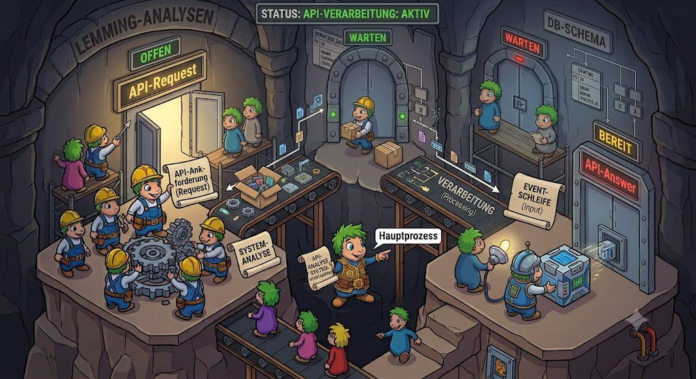

|
<< Click to Display Table of Contents >> Navigation: Programmiermodell > API Requests |

Bei der Plattform "Gemstone/S" wurde zum ersten Male API-Aufrufe in PUM definiert. Da mussten erst einmal einige Festlegungen getroffen werden (einige davon sind "best practices" Ratschläge):
•Pro API Call kann man nur eine Parameterstruktur und eine Ergebnisstruktur definieren. Diese Daten werden als JSON-Strukturen an- bzw. ausgeliefert.
oEs gibt CRUD-Calls, die bis zu vier API-Calls bestehen. CRUD-Calls werden als "ganzes" editiert.
▪Innerhalb eines CRUD-Calls können die Parameterklasse oder die Ergebnisstruktur mehrfach genutzt werden, ansonsten sollte man darauf achten, daß jeder API-Call seine eigenen Strukturen nutzt.
▪Bei dem CRUD-Read Call kann man Filteranweisungen, Sortierungsanweisungen und Paging-Anweisungen mitgeben. Das Format dieser Strukturen entsprechen Sencha ExtJS: Ein String mit einer JSON-Struktur.
oLediglich sehr allgemeine Parameter- oder Ergebnisstrukturen sollten zwischen den Calls genutzt werden: z.B. ein Call, der true oder false zurückgibt oder nur einen String oder eine ID oder eine Zahl.
oJeder Call gibt zusätzliche Informationen zurück: Erfolgsfall (true, false), Interne Abarbeitungszeit in ms, Antwortprozeß-ID, im Fehlerfall eine Error-Struktur
•Es gibt neben der "persistenten" Hierarchie nun auch eine API-Hierarchie. Klassen der API-Hierarchie dienen der Abarbeitung der API-Calls, bzw. beim Export und Import von Daten in das System. Dann sollten API-Klassen genutzt werden - denn nur bei API-Klassen, werden automatisch JSON-Strukturen angelegt bzw. unterstützt. Diese Festlegung ist der sichtbarste Teil der gesamten API Definitionen.
•Das System hat ein festes API-Format bei "Datum", "Uhrzeit" und "Zeitstempel" definiert. Enumerationen werden als "strings" übertragen.
•Um API-Calls definieren zu können, muss erst einmal eine API-Deklaration angelegt werden, mit der man praktisch eine Versionierung der API Calls erreichen kann. Diese API-Deklaration definiert Teile der URL (z.B. Kürzl und Versionsnummer) - aber wir haben das Feature in 10 Jahren nicht genutzt, weil wir in der Regel die alten API Calls weiterpflegen mussten. Wir haben dann namentlich andere API Calls angelegt, die dann zusätzliche Werte aufnehmen konnten.
oAls weitere Unterteilung kann man API-Gruppen definieren - z.B. alle Calls, die Benutzersitzungen betreffen, oder alle Calls, die Projekte betreffen.
Ja, ja - und gleich das nächste Problem. API Aufrufe, die auf eine begrenzte Anzahl von Antwortprozessen treffen. Auch hier kann es schnell zu Behinderungen kommen. Ein mächtiges Dispatching hilft hier sehr stark. Leider habe ich bisher kaum sehr gute Lösungen gefunden, also müssen die typischen Hausmittel von Apache und Co. reichen.
Bei jeder Implementierung eines API-Calls sollte der Entwickler einschätzen können
•wie komplex die Methode ist,
•wieviel Datenvolumen sie bewegt,
•wieviel neue Objekte angelegt werden,
•werden externe Netzwerk-Calls durchgeführt.
Also insgesamt: die Komplexität und Zeitdauer, die so ein Call benötigt. Das führt zu einer Kategorisierung der API-Calls und entsprechend muß man seine Calls dispatchen.
Ich habe die Calls bisher in die folgenden Kategorien eingeteilt:
•normal - normaler Call
•long - langer Call, nur unwesntlich mehr Memory notwendig als normal
•memory - langer Call mit viel Speicher notwendig
•extdb - Call zu externen Datenbank
Die jeweiligen Prozesse sollten nur die Calls durchführen, die zu ihrer Kategorie gehören.
Wenn diese Kategorisierung nicht ausreicht - dann muß ein ordentliches Background-Processing programmiert werden.